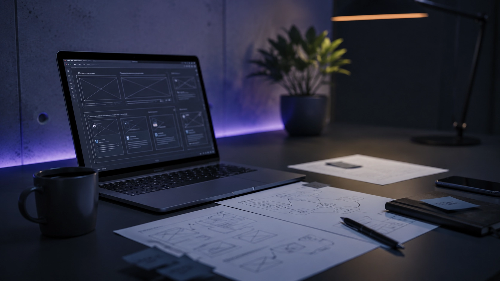
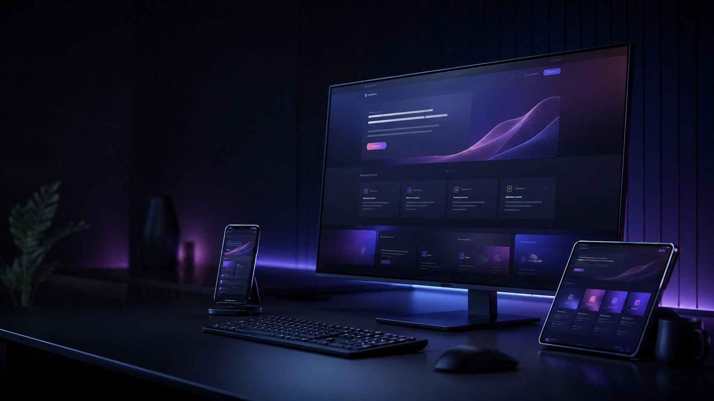
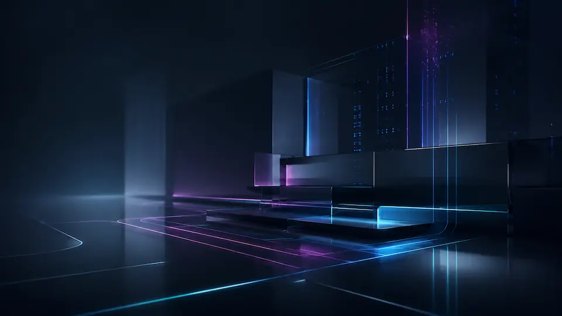

Klarheit in den ersten Sekunden
Besucher sollen sofort verstehen, was du anbietest und für wen es gedacht ist.
Webentwicklung
Ich entwickle professionelle Websites für Unternehmen, die online verständlich auftreten, Vertrauen aufbauen und aus Besuchern echte Anfragen machen wollen.
Das Problem
Eine Website muss mehr leisten als gut aussehen. Sie muss dein Angebot verständlich machen, Vertrauen aufbauen, technisch sauber laufen und Besucher zur nächsten Handlung führen.
Mein Anspruch
Eine gute Website ist nicht nur eine schöne Oberfläche. Sie muss verständlich, schnell und belastbar sein.
Besucher sollen sofort verstehen, was du anbietest und für wen es gedacht ist.
Jede Seite braucht eine klare Aufgabe, eine sinnvolle Reihenfolge und eindeutige nächste Schritte.
Die Website muss auf dem Smartphone genauso verständlich und angenehm funktionieren wie am Desktop.
Performance, Semantik, Bildgrößen und Wartbarkeit werden nicht nachträglich geflickt, sondern von Beginn an berücksichtigt.
Kontaktmöglichkeiten und Handlungsaufforderungen werden so platziert, dass Besucher ohne Nachdenken den nächsten Schritt finden.
Leistungsbereiche
Ich verbinde Struktur, Gestaltung und technische Umsetzung zu einer Website, die nicht nur modern wirkt, sondern im Alltag funktioniert.

Strategie, Seitenstruktur und Inhalte mit klarer Richtung.

Visuelle Hierarchie, mobile Klarheit und einfache Handlungswege.

Sauberer Code, schnelle Ladezeiten und wartbare Komponenten.
Technische SEO-Grundlagen und Bildoptimierung von Anfang an.
Codebasierte Websites
Eine moderne Website braucht kein starres Baukastensystem, sondern ein starkes digitales Fundament. Codebasierte Websites geben dir die Freiheit, deine Online-Präsenz völlig unabhängig zu hosten, flexibel zu erweitern und nach eigenen Regeln zu kontrollieren – ohne ungefragte Updates von Drittanbietern. Weil nur geladen wird, was wirklich nötig ist, profitierst du von exzellenter Performance, optimierten Ladezeiten und erstklassigem SEO. Das Ergebnis ist maximale Zukunftssicherheit: Eine technisch klare Struktur, die durch Schnittstellen und Automatisierungen nahtlos mit deinem Unternehmen mitwächst.
Performance
Details ansehenSchnelle Ladezeiten, stabile Darstellung und schlanke Assets sorgen dafür, dass Besucher ohne Wartezeit ins Angebot finden.
ZurückdrehenAccessibility
Details ansehenKlare Kontraste, semantische Struktur und bedienbare Elemente machen die Website besser nutzbar.
ZurückdrehenBest Practices
Details ansehenSaubere Standards, sichere Einbindung und moderne Technik halten die Website wartbar und vertrauenswürdig.
ZurückdrehenSEO
Details ansehenSemantisches HTML, Meta-Daten und mobile Sauberkeit geben Suchmaschinen eine klare technische Grundlage.
ZurückdrehenDank moderner Entwicklung und KI
muss eine codebasierte Website heute nicht automatisch teurer sein.
Oft ist sie langfristig sogar die wirtschaftlichere Lösung.
Typische Projekte
Ob neue Website, Relaunch oder gezielte Optimierung: Der Umfang richtet sich danach, was dein Unternehmen wirklich braucht.
Für wen? Für Selbstständige und kleine Unternehmen, die einen professionellen Webauftritt brauchen.
Was entsteht? Eine klare Website mit Startseite, Leistungsbereichen, Über-mich/Über-uns, Kontaktbereich und sauberer Struktur.
Was bringt es? Besucher verstehen schneller, was du anbietest, warum sie dir vertrauen können und wie sie dich kontaktieren.
Für wen? Für bestehende Websites, die veraltet wirken, unübersichtlich sind oder technisch nicht mehr sauber laufen.
Was entsteht? Deine Inhalte, Seitenstruktur, Gestaltung und Technik werden neu aufgebaut oder gezielt verbessert.
Was bringt es? Die Website wirkt moderner, ist verständlicher aufgebaut und führt Besucher gezielter zur Anfrage.
Für wen? Für ein bestimmtes Angebot, eine Dienstleistung, ein Produkt oder eine Kampagne.
Was entsteht? Eine fokussierte Seite, die dein Angebot erklärt, Vorteile zeigt, Fragen beantwortet und zur Kontaktaufnahme führt.
Was bringt es? Interessenten finden schneller die wichtigsten Informationen und entscheiden leichter, ob dein Angebot passt.
Für wen? Für Websites, die langsam laden, technisch unsauber aufgebaut sind oder online schwer gefunden werden.
Was entsteht? Optimierung von Ladezeit, Struktur, Meta-Daten, Bildern, technischer Basis und wichtigen SEO-Grundlagen.
Was bringt es? Die Website wird schneller, besser lesbar für Suchmaschinen und angenehmer für Besucher.
Für wen? Für Websites, die neue Funktionen brauchen, ohne unnötig kompliziert zu werden.
Was entsteht? Zum Beispiel neue Inhaltsbereiche, Formulare, Unterseiten, Tracking, Einbindungen oder kleinere Systemerweiterungen.
Was bringt es? Deine Website wächst mit deinem Unternehmen, bleibt aber übersichtlich und wartbar.
Für wen? Für Unternehmen, die Anfragen, Formulare oder wiederkehrende Abläufe besser organisieren möchten.
Was entsteht? Kontaktformulare, Benachrichtigungen, einfache Übergaben und strukturierte Abläufe nach einer Anfrage.
Was bringt es? Weniger manuelle Nacharbeit, schnellere Reaktion auf Anfragen und klarere Prozesse im Hintergrund.
Vielleicht passt dein Vorhaben nicht exakt in eine dieser Kategorien. Das ist kein Problem. Beschreibe kurz, was du planst, was aktuell nicht funktioniert oder welches Ziel du mit deiner Website erreichen möchtest.
Projekt anfragenWarum Smart Web Studio
Du bekommst keine Website von der Stange, sondern eine Lösung, die zu deinem Angebot, deinen Kunden und deinem Ziel passt. Ich begleite dich direkt vom ersten Konzept bis zur fertigen Umsetzung: klar, verständlich und ohne unnötigen Agentur-Umweg.
Du sprichst direkt mit mir. So bleiben Abstimmungen kurz, Entscheidungen klar und dein Projekt wird ohne Reibungsverlust umgesetzt.
Technik wird verständlich erklärt, damit du Entscheidungen auf Augenhöhe treffen kannst.
Schnelle Ladezeiten, saubere Struktur, SEO-Grundlagen und Wartbarkeit sind bei mir kein Extra, sondern Teil einer professionellen Website von Anfang an.
Nächster Schritt
Ob neue Website, Relaunch oder eine bestehende Seite, die mehr leisten soll: Beschreib mir in zwei, drei Sätzen dein Vorhaben. Du bekommst eine ehrliche Einschätzung, einen klaren nächsten Schritt und eine offene Antwort, ob ich der Richtige dafür bin. Unverbindlich und ohne Verkaufsdruck.
Projekt besprechenIch melde mich meist innerhalb von 1–2 Werktagen